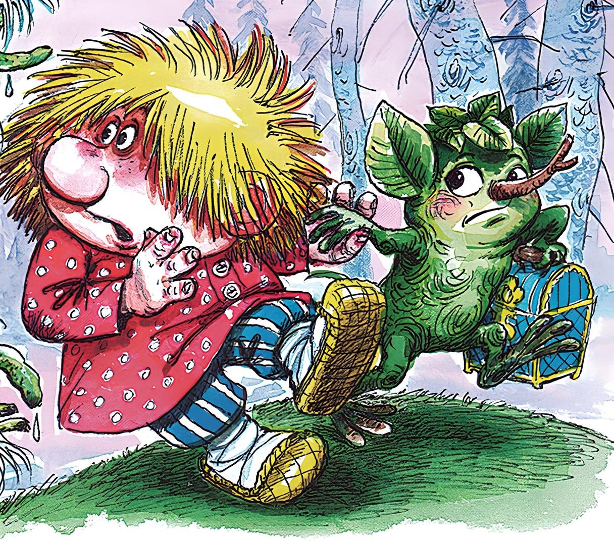
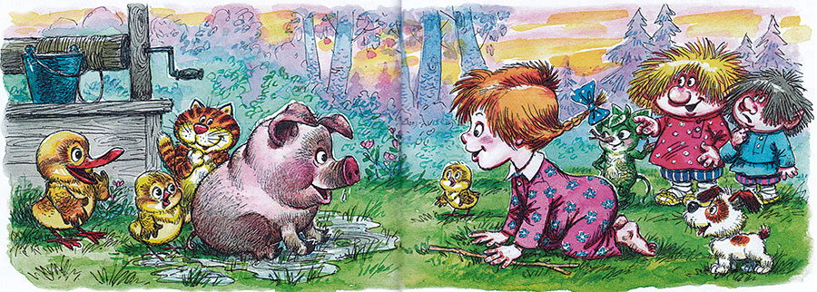
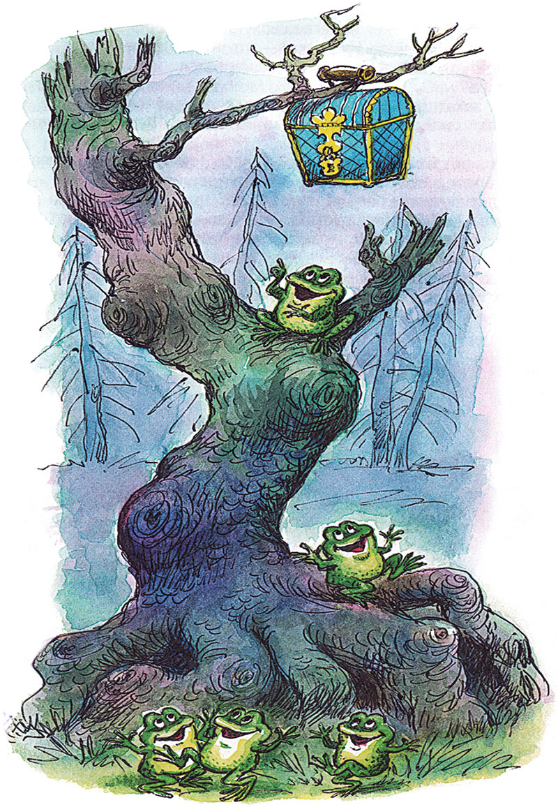
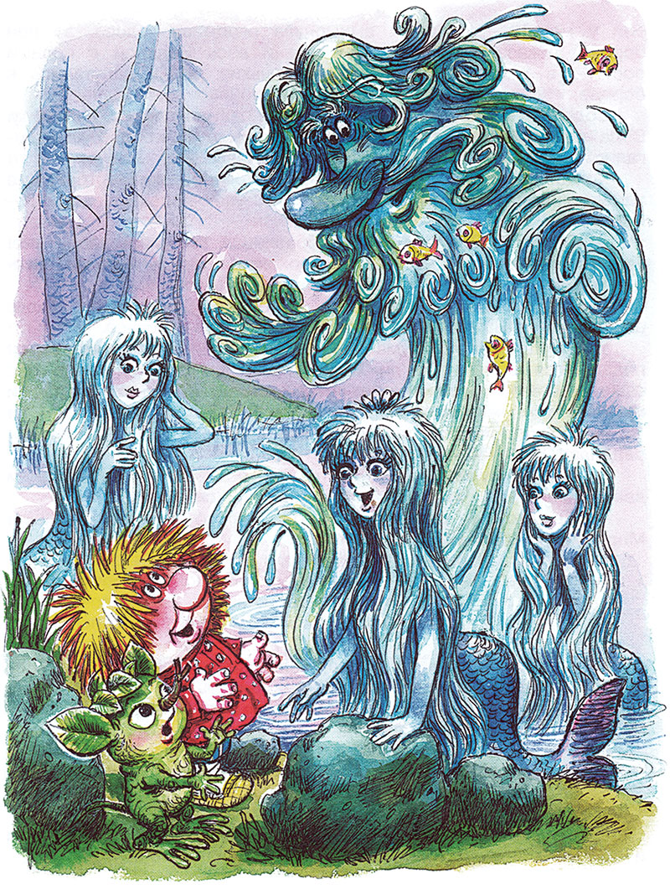

Домовёнок Кузя - продолжение -12.
Татьяна Александрова
27. Закат
Маленький домовенок с маленьким лешонком сидели под березой на краю Черного болота и плакали. Теперь друзья знали, что маленькая деревня у небольшой речки совсем недалеко. Кузька смотрел на закат и вспоминал, как точно такой же закат, точка в точку, тучка в тучку, видел он вместе со своим другом Вуколочкой.
Домовята редко глядят на закаты. Разве поспорят, на кого похоже облако — на поросенка, на лягушку или на толстого Куковяку. И больше в небо не смотрят: поросят, лягушек и Куковяку можно увидеть и на земле.
Один Вуколочка любовался небесной красотой, а иногда звал с собой Кузьку. Усядутся поудобнее под забором в крапиву (домовым она не страшна) и любуются. Вуколочка сунет палец в рот, глядит на вечернее небо, забыв даже про своего лучшего друга. А Кузька скоро забывает про закат и глядит на деревенскую улицу.
Люди домовят не замечали. Другое дело — кошки или собаки. Знакомые кошки, пробегая, задевали друзей хвостами, а поглядывали так, будто видят Кузьку с Вуколочкой первый раз в жизни. Зато собаки! Чужие сразу лают и хватают за лапти, а свои Шарик или Жучка храбро защищают. Долго перекатывается по деревне собачий лай. А там и в других деревнях собаки откликнутся. И ветер носит этот лай от деревни к деревне всем домовым на радость.
На плетнях и заборах сидели воробьи, вороны, прочие вольные птицы и смеялись над домашними птицами: до чего ж они глупы и жирны! Какой-нибудь петух поймет не поймет, да вдруг заголосит, взмахнет крыльями, налетит как ястреб и освободит забор. И опять на плетнях и заборах машут рукавами сохнущие рубашки, молча проветриваются кувшины, чугуны, ведра, половики, тулупы. Иногда задумчивый теленок жует половик или печальная коза пробует на вкус чьи-то штаны, и тогда из дому выбегают бабка или дед, а ежели людей не оказывается, то через порог переползает домовой и прогоняет скотинку. Ведь большого ума не надобно, чтоб жевать онучи!
Вуколочка закатами любовался, а Кузька — травой-муравой на деревенской улице. Бегают в траве утята, цыплята, гусята, поросята с матушками, а то и с батюшками. Щенки, котята и дети бегали сами, без матушек-батюшек. Взрослые люди бегали редко, а встречаясь, кланялись и разговаривали. Больше всего взрослые любили ходить по воду. Они черпали из колодца ведро за ведром. Кузька все ждал, когда же кончится вода. Но она и не думала кончаться. Кто ее подтаскивал и доливал в колодец? Водяной, что ли, присылал кого-нибудь ночью, под покровом тьмы? Кузька с Вуколочкой давно собирались выследить, кто доливает в колодец воду. Но нечаянно как соберутся, так проспят. Люди, наверное, тоже не знали, кто доливает воду, и подолгу беседовали об этом у колодца.
Дорога пыльная. Бежит по ней поросенок, хрюкает. А за ним Нюрочка с хворостиной. Рубаха у нее длинная, сама Нюрочка коротенькая, запуталась, упала и как заревет. Мала, а голос как у быка. Рева, каких свет ни слыхивал. Надо — плачет, и не надо — плачет. Раньше все прибегали ее жалеть, да на всякий рев не набегаешься. Лишь поросенок вылез из лужи утешать хозяйку. Нюрочка — от него, даже плакать забыла. Кузька хохочет, а Вуколочка удивляется: что смешного видно на небе?

Один закат Кузька все же разглядел и запомнил.
— Ой, смотри! — Вуколочка повернул Кузькину голову к небу.
Долго друзья глядели, как в небе сияют и переливаются алые, желтые, золотые лучи. Кузька решил, что заря — это большущая лучина: солнце зажгло ее, чтобы не ложиться спать в темноте. А Вуколочка сказал, что солнце уже засыпает и что заря — это его сны. Домовята даже поспорили.
Все это вспомнил Кузька, глядя на закат. Даже хотел толкнуть Вуколочку, но толкнул Лешика. И вот то ли солнце задуло свою лучину, то ли сгорела она дотла. Стало темным-темно.
И вдруг из болота послышалось:
— Никто-никто вам не поможет! Кто-кто не поможет, а мы поможем! Кому-кому, а вам поможем! И не кто-кто, а мы! И не кому-кому, а вам! Кому-кому, как не вам!

И лягушки скок-скок по болоту, с кочки на кочку, с кочки на кочку. Искали-искали сундучок и нашли. Висит среди болота на суку на длинной сухой коряге, сколь ни прыгай — не достанешь. Прыгали-прыгали лягушки, квакали-квакали и придумали, как быть.
28. Дядя Водяной
Маленький домовенок и маленький лешонок следом за лягушками прыгали по мокрому лугу. Что-то сверкает впереди, что-то светит в небе. Вот у реки то ли кусты качаются, то ли кто-то машет руками.
Русалки!
Русалки качались на ветвях деревьев, склонившихся над водой. Русалки водили хоровод на светлом песке. Одна русалка сидела на большом камне и пела песню.
— Смотрите, Кузька! — закричала она. — Домовенок Кузька! Его ищут, ищут, ищут, у всех спрашивают. Вот обрадуются домовые!
— Кузька! — Русалки окружили домовенка, потащили к реке, смыли с него болотную грязь и давай щекотать. — Вот счастье-то! Кузька нашелся!
И Кузька, смеясь от щекотки, сообщил русалкам.
— А у нас — хи-хи-хи! — кикиморы — ой, батюшки, не могу! — волшебный сундучок — ха-ха-ха! — украли!
Русалки все до одной всплеснули руками и заплакали. Луна поднялась. На светлом песке сидят Кузька и Лешик, думают. В реке плавают русалки, и качаются на волнах и тоже думают. И придумали!
— Водяной! Дядя Водяной! — стали звать русалки и Кузька с Лешиком.
Вода в реке дрогнула, покрылась рябью. По ней пошли большие круги. И вот показалась огромная косматая голова. Луна освещала длиннющие усы и бороду, корявые руки и могучие плечи.
— Это почему такой шум-гам? Что орете, как коровы на лугу? — кричит Водяной. — Ну? Чего молчите? Отвечать нету вас. Озорничать — на это пригодны. А это кто такой?
— Кузька! — закричали русалки. — Кузька нашелся!
— Ну и что? Ну и нашелся! Надоел он мне. Все про него спрашивают — и домовые, и лешие: «Не видел ли, не встречал ли?» Ну, вижу! Ну и что? И глядеть-то не на что! А это кто? Лешик? Какого лешего ему здесь нужно?
Голос у Водяного такой грубый, что Кузька с Лешиком спрятались за большой камень.
— Кто меня звал? Кому я надобен?
— Мы звали! Нам надобен! — кричали русалки.
— Ну а вы мне не надобны! — грубым голосом ответил Водяной и скрылся в реке, только круги пошли.
Скоро на том же месте снова вынырнула косматая голова. Водяному было любопытно, зачем это он понадобился русалкам, да еще и домовенку с лешонком. Русалки и прежде звали его: той подари жемчужинку, другой — жемчужинку, третьей лилии подай, да не какие-то желтые кувшинки, а нежные голубоватые лилии под цвет луны, и чтобы он, Водяной, эти лилии сажал бы и выращивал. Но чтобы все сразу звали Водяного, этого еще не было.
Водяной важно высунул голову и сурово спросил:
— Ну, что вам? Что? А дальше что? Рассказывайте, рассказывайте, да все разом, а то не пойму, больно у вас голосочки нежные!
— Сундучок, дядя Водяной! Волшебный сундучок кикиморы утащили! — хором ответили русалки и Кузька с Лешиком.
— Ну и что? — еще суровее спросил Водяной. — Они утащили, а мне что?
— Как — что? — хором ахнули русалки. — Сундучок волшебный! Как же без него Кузьке домой вернуться?
— Ну и пусть не возвращается! — Водяной опять ушел в воду.
Ждали-ждали русалки, нет, не показывается. И тут одна русалочка засмеялась:
— Ай да кикиморы! Даже дядю Водяного не боятся! Ни за что его не послушаются!
— Это меня не послушаются, говоришь? Вот я им! Вот они у меня! — Из воды вынырнула огромная голова, за ней борода, показались плечи, вот уже и весь Водяной в полный рост, в тине, в водорослях, маленькие рыбки запутались в бороде.

Водяной вышел из реки, свистнул и направился к болоту. Вода потоками лилась с бороды. А за ним, как по реке, двигались русалки, лягушки, рыбы, жуки-плавунцы…
Когда Кузька с Лешиком, прыгая через ручьи, бегущие за Водяным, подошли к болоту, там уже перекатывался голос:
— Ого-о-о! Охальницы! Безобразницы! Кикиморы болотные! Тащите мне сундук, который у прохожих отняли! Русалки, сундук никому не отдам, у себя оставлю! Ого-го!
— Ох! — испугался Кузька. — Мало радости от такого спасения!
Уже чуть светало. Туман то ли опускался на болото, то ли поднимался с него. То ли ходил кто-то по болоту, то ли оно само чавкало. Кикиморы не откликались. Хихикнет кто-то, и какие-то тени в тумане носятся туда-сюда.
— Молчат! Жижи болотной в рот набрали! Тьфу ты! — рассердился Водяной.
— Фу-ты, ну-ты, лапти гнуты! — подхватили кикиморы и давай плеваться, чихать, каркать, крякать, скрипеть.
— Вы что? — рявкнул Водяной. — Это я к вам пришел! Мне сундук подавайте! Вот я вас! Кикиморы помолчали и вдруг грянули хором:
Как на горушке козел, На зелененькой козел!
Русалки застонали от ужаса, услышав эту песню. Ведь Водяной терпеть не может козлов, слышать о них не хочет, жизнь ему делается не мила при одном имени козла. А кикиморы как ни в чем не бывало дразнят:
Чики-брыки-прыг, козел! Чики-брыки-дрыг, козел!
Схватился Водяной за уши, бегом назад. Добежал до реки и бросился в омут головой.
Продолжение следует